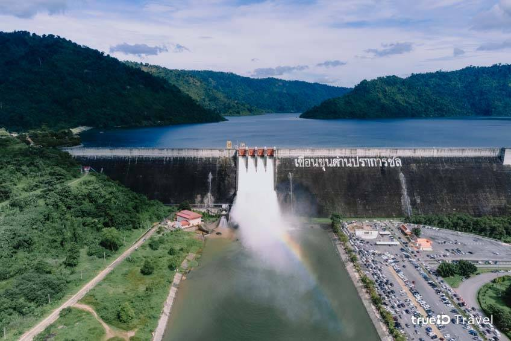

| ถ้าพูดถึง ที่เที่ยวนครนายก ที่แรกๆ ที่นึกถึง คงจะเป็นที่นี่อย่างแน่นอน เขื่อนขุนด่านปราการชล หรือ เขื่อนขุนด่าน แห่งนี้ เพราะนับว่าเป็นที่เที่ยวดัง รวมไปถึงมีความสำคัญมากๆ ในการช่วยเก็บกักน้ำในช่วงหน้าฝนเอาไว้ใช้ในหน้าแล้ง และช่วยไม่ให้เกิดน้ำท่วมบ้านเรือน ไร่นาและพื้นที่การเกษตรของชาวบ้านในช่วงหน้าฝน โดยสร้างขึ้นตามแนวพระราชดำริของ ในหลวงรัชกาลที่ 9 และ เขื่อนขุนด่านปราการชล นี้ยังเป็น เขื่อนคอนกรีตอัดบดยาวที่สุดในประเทศไทย และในโลกอีกด้วย ส่วนชื่อ เขื่อนขุนด่านปราการชล ก็มาจากชื่อของ ขุนหาญพิทักษ์ไพรวัน หรือ ขุนด่าน เพื่อเป็นการเชิดชูวีรชน ของ นครนายก ในสมัยกรุงศรีอยุธยา |
| มีความยาว 2,658 เมตร สูง 92 เมตร ซึ่งรับน้ำที่ไหลมาจากอุทยานแห่งชาติเขาใหญ่ ผ่านน้ำตกเหวนรกลงสู่อ่างเก็บน้ำ มีความจุมากถึง 224 ล้าน ลูกบาศก์เมตรทำให้ที่นี่กลายเป็นแหล่งท่องเที่ยวสุดฮิตของนครนายก เพราะมีวิวทิวทัศน์ที่สวยงามอย่างมาก ทั้งบริเวณด้านหน้าเขื่อน วิวเมืองนครนายกด้านหลังเขื่อน และจุดที่น้ำไหลลงมาจากเขื่อน ก็สวยงามมากเช่นกัน มองแล้วคล้ายกับน้ำตกเลย |
|  |
| ยิ่งในช่วงที่มีฝนตกเขื่อนจะปล่อยน้ำออกมามากกว่าปกติ นักท่องเที่ยวจะนิยมมา ล่องแก่ง เล่นน้ำคลายร้อนรวมถึงที่นี่ยังเป็นแลนด์มาร์คสำหรับนักปั่น เพราะเป็นจุดพักยอดนิยมของนักปั่น เพราะมีทั้งอากาศเย็นสบาย วิวสวยงาม และพื้นที่กว้างขวางนั่นเองค่ะอีกทั้งบริเวณรอบ เขื่อนขุนด่านปราการชล ยังมีแหล่งท่องเที่ยวอีกมากมาย ทั้ง น้ำตก ภูเขา เรียกว่ามาเที่ยวได้ทั้งวันเลยก็ว่าได้ค่ะ รวมไปถึงมี น้ำตกช่องลม เป็นไฮไลท์ของที่นี่อีกด้วย วิวสวยจนนึกว่าอยู่กรีนแลนด์ นอกจากนี้ก็จะมี น้ำตกผางามงอน น้ำตกที่ได้ชื่อว่ามีความคล้ายกับน้ำตกทีลอซู และ น้ำตกคลองครามซึ่งบรรยากาศก็ดีไม่แพ้น้ำตกอื่นๆ |
|